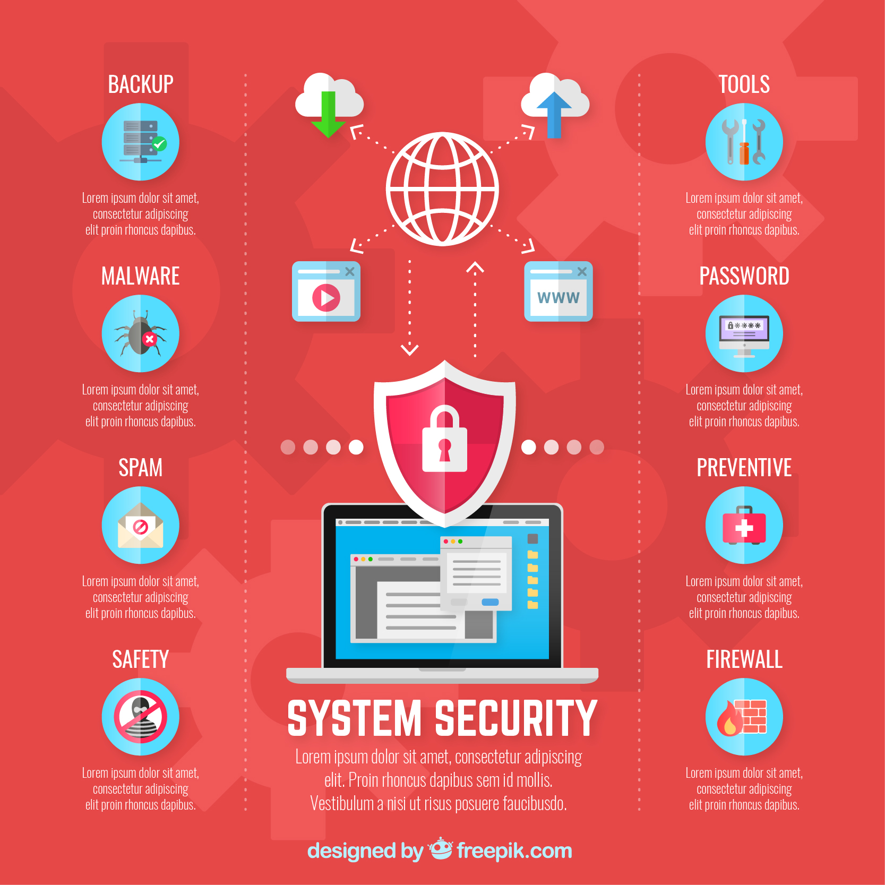
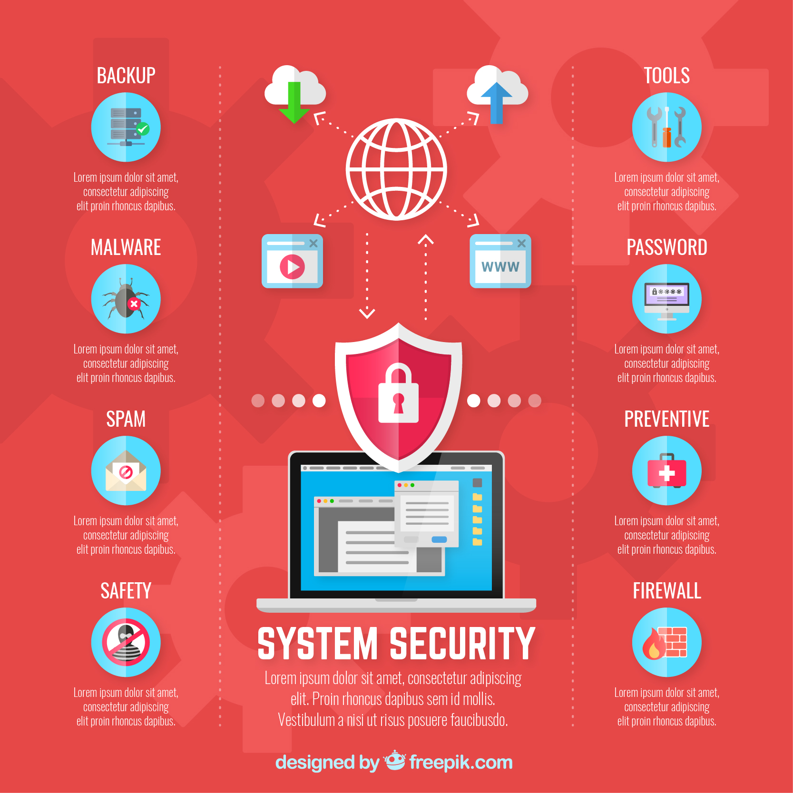

La seguridad informática, también conocida como ciberseguridad o seguridad de tecnologías de la información, es el área relacionada con la informática y la telemática que se enfoca en la protección de la infraestructura computacional y todo lo relacionado con esta y, especialmente, la información contenida en una computadora o circulante a través de las redes de computadoras.1 Para ello existen una serie de estándares, protocolos, métodos, reglas, herramientas y leyes concebidas para minimizar los posibles riesgos a la infraestructura o a la información.
MECANISMOS SEGURIDAD INFORMATICA
¿Cómo podemos proteger el sistema informático? Lo primero que hemos de hacer es un análisis de las posibles amenazas que puede sufrir el sistema informático, una estimación de las pérdidas que esas amenazas podrían suponer y un estudio de las probabilidades de que ocurran. A partir de este análisis habrá que diseñar una política de seguridad en la que se establezcan las responsabilidades y reglas a seguir para evitar esas amenazas o minimizar los efectos si se llegan a producir. Definimos Política de seguridad como un “documento sencillo que define las directrices organizativas en materia de seguridad” (Villalón). La política de seguridad se implementa mediante una serie de mecanismos de seguridad que constituyen las herramientas para la protección del sistema. Estos mecanismos normalmente se apoyan en normativas que cubren áreas mas específicas.
 
